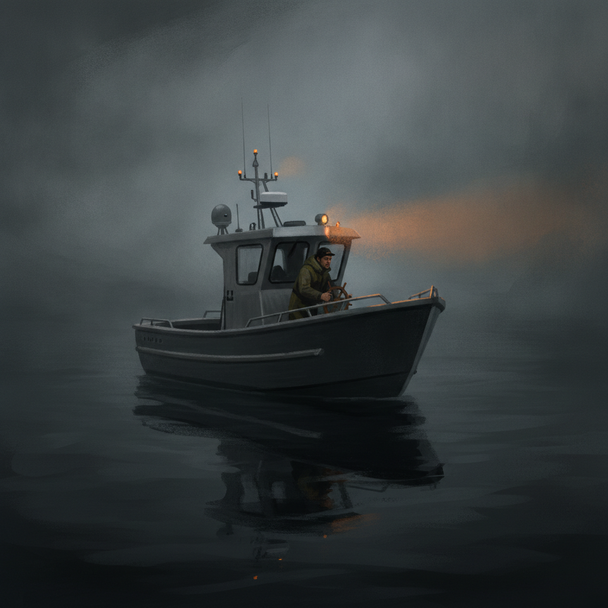

There was no single blowup. No post-mortem-worthy disaster, no one decision you could point to. The deadline that used to feel comfortable now feels like a stretch. Standups keep surfacing problems that were supposedly solved months ago. Nobody on the team could tell you, if you asked directly, exactly when things started slipping.
That’s not a failed project. It’s what CIO.com’s reporting on the pattern calls “drift”: movement that happens “slowly, especially as a result of outside forces, with no one in control of direction.”1 The distinction is more than semantic. A project that was mismanaged from day one and a project that drifted off course need different fixes, and applying a failure-mode intervention (a full audit, a blame-finding retro, a rebuilt org chart) to a drift problem usually just adds more process on top of a project that already has too much of it.
Recovering from that doesn’t require a dramatic rescue plan or an outside consultant parachuting in. It requires five deliberate moves. None of them are novel on their own (they show up, in different words, in Richard Keenlyside’s 10-step rescue playbook2, in PMI’s own recovery research3, and in Birchman Group’s project-reset framework4), but run in sequence, they’re what actually gets a drifted project back under someone’s control.
Where Drift Actually Comes From
Drift has identifiable sources, and none of them is "the team stopped caring." Four recurring drivers show up again and again: a vendor or platform change forcing unplanned rework, a stakeholder quietly changing what they need, small enhancement requests nobody said no to, and a shift in business priorities that never got communicated back down. No single one sinks a project; the unacknowledged accumulation does.
A platform update forces a two-week detour, a stakeholder asks for "one more field" three times, a reorg two levels up quietly redefines "success"; none of it discussed in the same room or traded against the deadline. Every request was reasonable. The sum was a different project than the one approved, and nobody decided that on purpose.
The Five-Step Reset
Each step below draws on a specific, named source rather than generic advice: worth knowing which framework you're borrowing from if you want to go deeper on any one of them.
The order matters more than the list does. The most common shortcut is skipping straight to step four (replanning and re-governing) because it feels the most like “doing something,” while step one (naming the drift specifically, out loud) gets treated as a formality to rush past. PMI’s own recovery research and Keenlyside’s independently-published playbook both open with that same recognition step for a reason: a replan built on top of an undiagnosed problem just gives the drift a new, better-organized place to keep happening.23 The other skip is step three. Renegotiating feels confrontational, so teams quietly absorb the change instead, which is precisely the mechanism that turned the original scope into a different project in the first place.
None of this is a heroic effort, and it shouldn’t be sold internally as one: a reset that gets dramatized becomes its own distraction from the work. What it actually requires is the discipline to keep taking the next small step even when the full path back isn’t fully mapped yet, which is a far older idea than project management.
If you can’t fly then run, if you can’t run then walk, if you can’t walk then crawl, but whatever you do you have to keep moving forward.
Martin Luther King Jr. said that closing a 1960 address at Spelman College, talking about mountains with far higher stakes than a missed sprint deadline.5 The comparison only holds at one narrow point, and it’s worth being precise about which one: not the size of the obstacle, but the mechanism for getting past it. Momentum, sustained in small steps, is what actually restores control, not the single perfect move that undoes months of drift in one stroke, because that move doesn’t exist.
A drifted project rarely announces itself with a crisis. It just quietly stops being the thing everyone agreed to build. Naming that plainly, freezing what’s left, renegotiating instead of absorbing, rebuilding the governance that slipped, and shipping something real, in that order, is a small number of decisions you can make on purpose, instead of remaking them from scratch every time a new request shows up asking to be absorbed for free.
-
Mary Shacklett, “Project drift: How to deal with its silent project killer,” CIO.com, June 3, 2025, https://www.cio.com/article/4000524/project-drift-how-to-deal-with-its-silent-project-killer.html ↩
-
Richard Keenlyside, “10 Steps to Rescue a Troubled Project,” https://www.rjk.info/post/10-steps-to-rescue-a-troubled-project ↩↩
-
PMI’s six-step project recovery framework, “Six Steps to Project Recovery,” https://www.pmi.org/learning/library/six-steps-project-recovery-4641 ↩↩
-
Pam Moore, “The Hidden Discipline Behind Every Successful Project Reset,” Birchman Group, https://birchmangroup.com/the-hidden-discipline-behind-every-successful-project-reset ↩
-
Martin Luther King Jr., “Keep Moving from This Mountain,” Founder’s Day Address at Spelman College, April 10, 1960, archived by the Martin Luther King, Jr. Research and Education Institute, Stanford University, https://kinginstitute.stanford.edu/king-papers/documents/keep-moving-mountain-address-spelman-college-10-april-1960 ↩